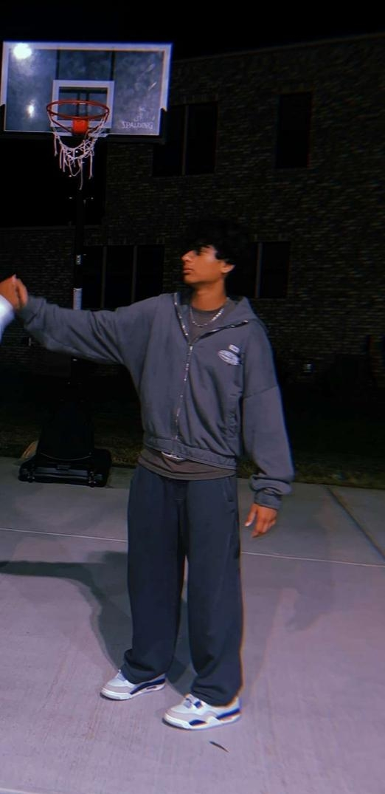

Abhi Jandyala
Charlotte, North Carolina Chapter Social Media Manager
Hi, my name is Abhi Jandyala. I'm from MRHS and I'm in 10th grade. My role is Social Media Manager and I am going to spread awareness of this club via social media.
Some of my interests are video editing, basketball, and running.